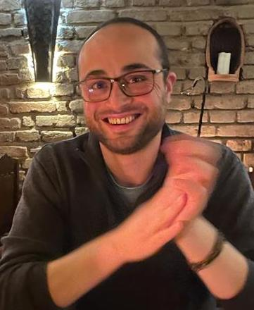

Learning & representation
Representation learning, conceptual spaces, and approaches that bring learning and reasoning together.
Full Professor · Université d’Artois
My research connects machine learning, natural language processing, and knowledge representation and reasoning.
CRIL · CNRS UMR 8188
Lens, France

01 / About
I am a Full Professor of Computer Science at Université d’Artois, based at IUT de Lens and a member of CRIL (CNRS UMR 8188). My research brings together machine learning, natural language processing, and knowledge representation and reasoning, with a particular interest in how learned representations can support reasoning.
I received my PhD in Computer Science from Université d’Artois in 2015 and my habilitation (HDR) in 2022. After postdoctoral appointments at Aix-Marseille University and Cardiff University, I joined Université d’Artois as an Associate Professor in 2017 and became a Full Professor in November 2024.
02 / Research
Representation learning, conceptual spaces, and approaches that bring learning and reasoning together.
Language models, lexical semantics, concept modelling, relation extraction, and knowledge base completion.
Ontologies, query answering, belief change, and reasoning with uncertain or inconsistent information.
Event-centric reasoning for interpreting everyday narratives.
Principal investigatorBelief change for multi-source information analysis.
Co-investigatorArtificial intelligence for material generation and predictive tools.
Designing artificial reasoners for communication.
03 / Publications
04 / Teaching
My teaching at Université d’Artois has covered artificial intelligence, machine learning, logic, and core computer science. I have also contributed to the university diploma in AI Ethics Management and designed a data-analysis module for the MSc in Toxicology.
05 / Resources